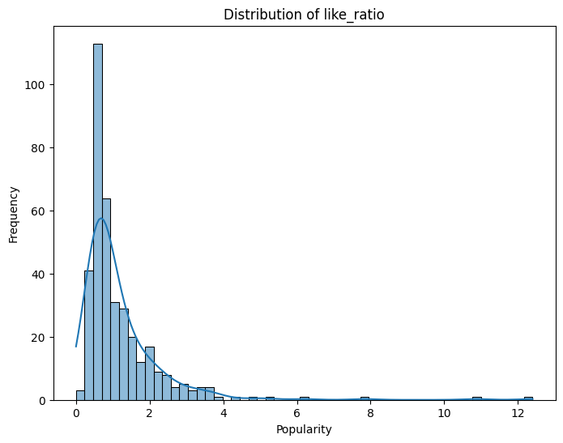

Final Report
Executive Summary
Unlocking the Power of Cross-Platform Synergy—This analysis utilizes advanced data analytics techniques across both YouTube and Spotify to understand how video views and song popularity influence each other. By integrating these platforms, we discovered significant cross-platform effects where YouTube’s metrics notably influence Spotify’s track popularity. This cross-platform synergy offers strategies to enhance content engagement across media, with potential to increase overall audience engagement.
Objective
Our project aims to quantitatively assess how YouTube music video (MV) characteristics affect the popularity of corresponding songs on Spotify. This cross-platform analysis helps in understanding which factors most significantly affect song popularity on Spotify when correlated with YouTube performance metrics.
Key Insights
- Cross-Platform Influence: A major insight is the strong correlation between YouTube MV views and Spotify song popularity, indicating that successful video marketing significantly boosts song streams.
- Artist Popularity: Both platforms show that higher artist popularity metrics significantly correlate with better performance metrics, suggesting a strong influence of artist reputation across media.
- Engagement Metrics: High engagement rates on YouTube, including likes and comments, are closely associated with higher popularity scores on Spotify, emphasizing the importance of active viewer interaction.
- Genre Impact: Specific genres that perform well on YouTube also see high stream numbers on Spotify, indicating similar audience preferences across platforms.
Visualizations
- Feature Importance:
 From the plot, we can see the most influential factor is Singer Popularity, markedly outstripping others like Subscriber Count and Genre Label. Features like View Count, Like Count, and Comment Count demonstrate moderate importance.
From the plot, we can see the most influential factor is Singer Popularity, markedly outstripping others like Subscriber Count and Genre Label. Features like View Count, Like Count, and Comment Count demonstrate moderate importance.
- Distribution of Popularity:
 The box plot shows the distribution of popularity scores mainly concentrated around the median near 70, indicating high overall popularity. The narrow interquartile range suggests little variability, with several outliers highlighting items of significantly lower popularity.
The box plot shows the distribution of popularity scores mainly concentrated around the median near 70, indicating high overall popularity. The narrow interquartile range suggests little variability, with several outliers highlighting items of significantly lower popularity.
- Distribution of like_ratio:
 This plot shows the distribution of like ratio ,and this is a clear right-skewed distribution, meaning that most videos have like ratios clustered in the lower region, with a long tail on the right side, indicating that a few videos have unusually high like ratios. This is a reflection of the fact that most music videos have a close and low like ratio, which may represent a “normal” level of interaction. Only a few videos have a particularly high like rate, and these are likely to be “viral” or particularly successful videos.
- Correlation Heatmap:
 Positive correlation: Like rate and comment rate are highly correlated (0.72), indicating that users’ interactive behaviors (likes and comments) are closely related. Singer popularity is highly correlated with platform popularity (0.72), indicating consistency in popularity measures between the two platforms The number of subscriptions is moderately correlated with the number of views (0.45), the more subscribers, the higher the number of views Singer popularity is also moderately correlated with channel subscriptions (0.41)
Positive correlation: Like rate and comment rate are highly correlated (0.72), indicating that users’ interactive behaviors (likes and comments) are closely related. Singer popularity is highly correlated with platform popularity (0.72), indicating consistency in popularity measures between the two platforms The number of subscriptions is moderately correlated with the number of views (0.45), the more subscribers, the higher the number of views Singer popularity is also moderately correlated with channel subscriptions (0.41)
Negative correlation: days since release is strongly negatively correlated with likes (-0.56), indicating that the longer the video has been released, the lower the likes are Singer popularity is weakly negatively correlated with comment sentiment score (-0.30), possibly indicating that more popular singers receive more negative comments
Finally, it can be seen that singer popularity shows significant correlations with several features that can be used as important predictors of singer popularity.
- Distribution of Key YouTube Music Video Metrics
For plot Distribution of Log10(View Count), it shows normal distribution characteristics. We can conclude that most of the videos have view counts between 107-109. For plot Like Ratio Distribution, it shows right skewed distribution. The Like Ratio of most videos is concentrated between 0-2%. For plot Comment Ratio Distribution, it shows a strong right-skewed distribution. Most videos have a comment ratio of less than 0.2%. For plot Singer Popularity Distribution, it ranges from 40-100 scores. There is a clear peak at around 80.
Business Implications
This project aims to help music industry practitioners better understand and grasp the market. Music producers, companies and singer teams can analyze the correlation between YouTube and Spotify platforms to allocate marketing budgets more rationally and produce more targeted content based on the characteristics of different platforms.
At the same time, this data can also help agencies assess the development potential of singers on Youtube, Spotify, meanwhile customize more appropriate content strategies for artists. Plus, music platform operators can draw on these analytics to improve their recommendation algorithms and optimize their content layout to enhance user experience. In addition, the data can also help industry players have a better acknowledge of the trends of the music market and understand the differences in user preferences across different platforms, so that they can formulate more accurate marketing strategies.
Recommendations
- Targeted Marketing Campaigns: Focus promotional efforts on artists and genres that exhibit strong cross-platform synergy.
- Enhanced Engagement Strategies: Develop content strategies that encourage viewer interaction on YouTube to leverage these engagements for increased Spotify streams.
- Data-Driven Content Creation: Utilize insights from data to tailor content that resonates well across both platforms, optimizing both video and music production to cater to proven audience preferences.
Conclusion
This comprehensive analysis employs advanced data analytics techniques across both YouTube and Spotify to uncover how video views and song popularity influence each other. By integrating insights from these platforms, we have identified significant cross-platform effects where YouTube metrics considerably impact Spotify’s track popularity. Leveraging this synergy provides actionable strategies for content creators and marketers to enhance their reach and engagement across media, ultimately boosting profitability and expanding market presence while increasing overall audience engagement.
Appendix
Citation
Dokuz, Y. (2024). Discovering popular and persistent tags from YouTube trending video big dataset. Multimedia Tools and Applications, 83, 10779–10797.
Khin Nyunt, N. T., & Khin, T. (2024). YouTube Career Analysis with the Combination of Trending Analysis and Sentiments Analysis. ESS Open Archive.
Meghana, K. (2024). Artificial Intelligence and Sentiment Analysis in YouTube Comments: A Comprehensive Overview. 2nd International Conference on Intelligent Data Communication Technologies and Internet of Things (IDCIoT), 1565-1572.
Giri, R., Sirsath, M., & Kanakia, H. T. (2024). YouTube Comments Sentiment Analysis. IEEE 9th International Conference for Convergence in Technology (I2CT), Pune, India, 1-4.
Dasovich-Wilson, J. N., Thompson, M., & Saarikallio, S. (2024). The characteristics of music video experiences and their relationship to future listening outcomes. Psychology of Music, 0(0).
Efe, I. E., Tesch, C., & Subedi, P. (2024). YouTube as a source of patient information on awake craniotomy: Analysis of content quality and user engagement. World Neurosurgery: X, 21, 100249.